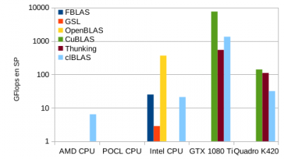
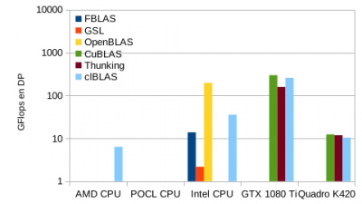
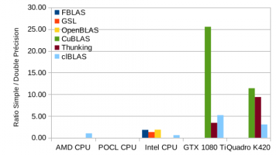
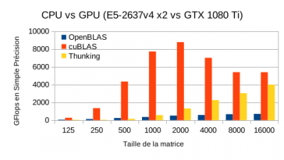
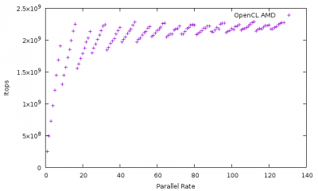
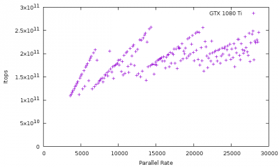
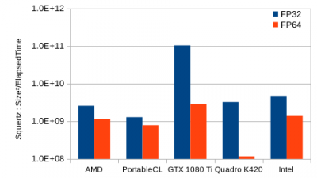
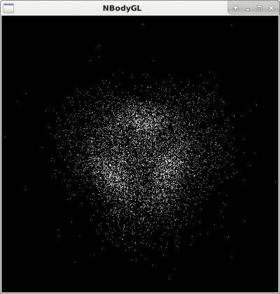
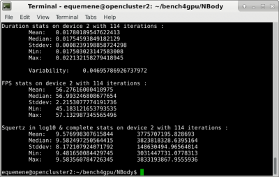

TP INSA 2019-2020 : le GPU par la pratique¶
Cette session pratique accompagne le cours du 9 décembre au matin réalisé par Emmanuel Quémener.
CQQCOQP : Comment ? Qui ? Quand ? Combien ? Où ? Quoi ? Pourquoi ?¶
Pourquoi ? Faire un tour d’horizon des GPUs et appréhender des méthodes d’investigation
Quoi ? Tester les GPU sur des exemples simples pendant deux séances de 4 heures
Quand ? Les lundi 9 décembre 2019, 6 janvier 2020, 13 janvier 2020, 20 janvier 2020
Combien ? Mesurer la performance que les GPUs offrent en comparaison des autres machines
Où ? Sur des stations de travail, des noeuds de cluster, des portables (bien configurés), dans des terminaux
Qui ? Pour les édudiants, enseignants, chercheurs, personnels techniques curieux
Comment ? En appliquant quelques commandes simples, généralement dans des terminaux.
But de la session¶
C’est de prendre en main les GPU dans les machines, de comparer les performances avec des CPU classiques par l’intermédiaire de quelques exemples simples et des codes de production.
Déroulement de la session¶
Investiguer le matériel GPU
Exploration avec le « coeur » du GPU : xGEMM
Exploration des GPU avec un Pi Monte Carlo
Exploration par un corps N-Corps à « grain fin » :
NBody.pyExploration de « codes métier » : TensorFlow, PKDGRAV3 et Gromacs
Démarrage de la session¶
Prérequis en matériel, logiciel et humain¶
De manière à proposer un environnement pleinement fonctionnel, le Centre Blaise Pascal fournit le matériel, les logiciels et un OS correctement intégré. Les personnes qui veulent réaliser cette session sur leur laptop doivent disposer d’un « vrai » système d’exploitation de type Unix, équipé de tout l’environnement adéquat.
Prérequis pour le matériel¶
Si vous utilisez le CBP, juste le login est nécessaire
Si vous n’utilisez PAS le CBP, une machine relativement récente avec un GPU intégré, de préférence Nvidia
Prérequis pour le logiciel¶
Une session graphique sur une station de travail, plusieurs terminaux et votre navigateur favori
Si vous n’utilisez pas le CBP, un OS GNU/Linux correctement configuré pour le GPU embarqué avec tous les composants Nvidia, OpenCL, PyOpenCL, PyCUDA.
Les personnes voulant exploiter de gros GPU ou GPGPU peuvent se connecter sur les machines suivantes :
gtx1080alpha, gtx1080beta, gtx1080gamma, gtx1080delta : stations virtuelles disposant de Nvidia GTX 1080
k80alpha, k80beta, k80gamma : stations virtuelles disposant d’1, 1 et 2 GPU de Nvidia Tesla K80
p100alpha, p100beta : stations virtuelles disposant d’une Nvidia Tesla P100
p100gamma : station virtuelle disposant de 2 Nvidia Tesla P100
k40m : station virtuelle disposant d’une Nvidia Tesla K40m
Jetez un coup d’oeil sur Monitoring des stations de travail avant de lancer vos tâches ! De grosses requêtes concurrentielles peuvent entraîner des DoS !
Prérequis pour l’humain¶
Une allergie à la commande en ligne peut dramatiquement réduire la portée de cette session pratique
Une pratique des scripts shell sera un avantage, sinon vous avez cette session pour parfaire vos connaissances.
Investiguer le matériel GPU¶
Qu’y a-t-il dans ma machine ?¶
Le matériel en Informatique Scientifique est défini par l’architecture de Von Neumann:
{kind=link}
CPU (Unité Centrale de Traitement) avec CU (Unité de Contrôle) et ALU (Unité Arithmétique & Logique)
MU (Unité de Mémoire)
Input and Output Devices : Périphériques d’Entrée et Sortie
Les GPU sont généralement considérés comme des périphériques d’Entrée/Sortie. Comme la plupart des périphériques installés dans les machines, ils exploitent un bus d’interconnexion PCI ou PCI Express.
Pour récupérer la liste des périphériques PCI, utilisez la commande lspci -nn. A l’intérieur d’une longue liste apparaissent quelques périphériques VGA ou 3D. Ce sont les périphériques GPU ou GPGPU.
Voici une sortie de la commande lspci -nn | egrep '(VGA|3D)' :
3b:00.0 VGA compatible controller [0300]: NVIDIA Corporation GP102 [GeForce GTX 1080 Ti] [10de:1b06] (rev a1)
a1:00.0 VGA compatible controller [0300]: NVIDIA Corporation GK107GL [Quadro K420] [10de:0ff3] (rev a1)
Exercice #1: récuperez la liste des périphériques (GP)GPU
Combien de périphériques VGA sont listés ?
Combien de périphériques 3D sont listés ?
Récupérez le modèle du circuit de GPU, dans son nom étendu.
- Récupérez sur le web les informations suivantes pour chaque GPU :
le nombre d’unités de calcul (les « cuda cores » ou les « stream processors »)
la fréquence de base des coeurs de calcul
la fréquence de la mémoire
La totalité des stations de travail contiennent des cartes Nvidia.
Dans les systèmes Posix (Unix dans le langage courant), tout est fichier. Les informations sur les circuits Nvidia et leur découverte par le système d’exploitation peuvent être récupérées avec un grep dans la commande dmesg.
Si le démarrage de la machine n’est pas trop ancien, vous disposez des informations comparables aux suivantes :
[ 19.545688] NVRM: The NVIDIA GPU 0000:82:00.0 (PCI ID: 10de:1b06)
NVRM: NVIDIA Linux driver release. Please see 'Appendix
NVRM: A - Supported NVIDIA GPU Products' in this release's
NVRM: at www.nvidia.com.
[ 19.545903] nvidia: probe of 0000:82:00.0 failed with error -1
[ 19.546254] NVRM: The NVIDIA probe routine failed for 1 device(s).
[ 19.546491] NVRM: None of the NVIDIA graphics adapters were initialized!
[ 19.782970] nvidia-nvlink: Nvlink Core is being initialized, major device number 244
[ 19.783084] NVRM: loading NVIDIA UNIX x86_64 Kernel Module 375.66 Mon May 1 15:29:16 PDT 2017 (using threaded interrupts)
[ 19.814046] nvidia-modeset: Loading NVIDIA Kernel Mode Setting Driver for UNIX platforms 375.66 Mon May 1 14:33:30 PDT 2017
[ 20.264453] [drm] [nvidia-drm] [GPU ID 0x00008200] Loading driver
[ 23.360807] input: HDA NVidia HDMI/DP,pcm=3 as /devices/pci0000:80/0000:80:02.0/0000:82:00.1/sound/card2/input19
[ 23.360885] input: HDA NVidia HDMI/DP,pcm=7 as /devices/pci0000:80/0000:80:02.0/0000:82:00.1/sound/card2/input20
[ 23.360996] input: HDA NVidia HDMI/DP,pcm=8 as /devices/pci0000:80/0000:80:02.0/0000:82:00.1/sound/card2/input21
[ 23.361065] input: HDA NVidia HDMI/DP,pcm=9 as /devices/pci0000:80/0000:80:02.0/0000:82:00.1/sound/card2/input22
[ 32.896510] [drm] [nvidia-drm] [GPU ID 0x00008200] Unloading driver
[ 32.935658] nvidia-modeset: Unloading
[ 32.967939] nvidia-nvlink: Unregistered the Nvlink Core, major device number 244
[ 33.034671] nvidia-nvlink: Nvlink Core is being initialized, major device number 244
[ 33.034724] NVRM: loading NVIDIA UNIX x86_64 Kernel Module 375.66 Mon May 1 15:29:16 PDT 2017 (using threaded interrupts)
[ 33.275804] nvidia-nvlink: Unregistered the Nvlink Core, major device number 244
[ 33.993460] nvidia-nvlink: Nvlink Core is being initialized, major device number 244
[ 33.993486] NVRM: loading NVIDIA UNIX x86_64 Kernel Module 375.66 Mon May 1 15:29:16 PDT 2017 (using threaded interrupts)
[ 35.110461] nvidia-modeset: Loading NVIDIA Kernel Mode Setting Driver for UNIX platforms 375.66 Mon May 1 14:33:30 PDT 2017
[ 35.111628] nvidia-modeset: Allocated GPU:0 (GPU-ccc95482-6681-052e-eb30-20b138412b92) @ PCI:0000:82:00.0
[349272.210486] nvidia-uvm: Loaded the UVM driver in 8 mode, major device number 243
Exercice #2 : récupérez les informations de votre machine avec `dmesg | grep -i nvidia`
Quelle est la version de pilote chargée par le noyau ?
Que représente, s’il existe, le périphérique
input: HDA NVidia?Est-ce un périphérique graphique ?
Le lsmod offre la liste des modules chargés par le noyau. Ces modules sont de petits programmes dédiés au support d’une fontion très spécifique du noyau, le moteur du système d’exploitation. Le support d’un périphérique nécessite souvent plusieurs modules.
Un exemple de lsmod | grep nvidia sur une station de travail :
nvidia_uvm 778240 0
nvidia_drm 40960 4
nvidia_modeset 1044480 3 nvidia_drm
nvidia 16797696 108 nvidia_modeset,nvidia_uvm
ipmi_msghandler 49152 1 nvidia
drm_kms_helper 155648 1 nvidia_drm
drm 360448 7 nvidia_drm,drm_kms_helper
Nous voyons que 4 modules sont chargés. La dernière colonne (vide pour les deux premières lignes) liste les dépendances entre les modules. Ici nvidia_modeset and nvidia_uvm dépendent du module nvidia.
Exercice #3 : récupérez les informations de l’hôte par la commande `lsmod | grep nvidia`
Les informations sont-elles identiques à celles ci-dessus ? Caractère par caractère ?
Le périphérique apparaît également dans le dossier /dev (pour device), le dossier parent pour tous les périphériques.
Un ls -l /dev/nvidia* offre ce genre d’informations :
crw-rw-rw- 1 root root 195, 0 Jun 30 18:17 /dev/nvidia0
crw-rw-rw- 1 root root 195, 255 Jun 30 18:17 /dev/nvidiactl
crw-rw-rw- 1 root root 195, 254 Jun 30 18:17 /dev/nvidia-modeset
crw-rw-rw- 1 root root 243, 0 Jul 4 19:17 /dev/nvidia-uvm
crw-rw-rw- 1 root root 243, 1 Jul 4 19:17 /dev/nvidia-uvm-tools
Vous pouvez voir que chacun peut accéder au périphérique, à la fois en lecture ET en écriture (le RW). Ici, vous avez un seul périphérique Nvidia, nvidia0. Sur une machine disposant de plusieurs périphériques Nvidia, nous aurions : nvidia0, nvidia1, etc…
Exercice #4 : récupérez les informations de votre machine avec `ls -l /dev/* | grep -i nvidia`
Combien de
/dev/nvidia<number>avez-vous ?Cette information est-elle cohérente avec les 3 précédentes ?
Nvidia présente des informations sur l’usage instantané de ses circuits avec la commande nvidia-smi. Cette commande peut aussi être exploitée pour régler certains paramètres du GPU.
Voici un exemple de sortie de la commande nvidia-smi :
Fri Jul 7 07:46:56 2017
+-----------------------------------------------------------------------------+
| NVIDIA-SMI 375.66 Driver Version: 375.66 |
|-------------------------------+----------------------+----------------------+
| GPU Name Persistence-M| Bus-Id Disp.A | Volatile Uncorr. ECC |
| Fan Temp Perf Pwr:Usage/Cap| Memory-Usage | GPU-Util Compute M. |
|===============================+======================+======================|
| 0 GeForce GTX 108... Off | 0000:82:00.0 On | N/A |
| 23% 31C P8 10W / 250W | 35MiB / 11172MiB | 0% Default |
+-------------------------------+----------------------+----------------------+
+-----------------------------------------------------------------------------+
| Processes: GPU Memory |
| GPU PID Type Process name Usage |
|=============================================================================|
| 0 4108 G /usr/lib/xorg/Xorg 32MiB |
+-----------------------------------------------------------------------------+
Beaucoup d’informations sont disponibles sur cette sortie :
version du pilote et du logiciel
nvidia-smil’identifiant de chaque GPU
son nom
sa localisation sur le bus PCIe
sa vitesse de ventilateur
sa température
ses puissances : instantanée et maximale
ses « occupations » mémoire : instantanée et maximale
les processus les exploitant, leur consommation de mémoire et le GPU associé
Exercice #5 : récupérez les informations avec la commande `nvidia-smi`
Identifiez les caractéristiques ci-dessus et comparer les éléments
Combien de processus sont-ils listés ?
Comme nous l’avons vu dans l’introduction sur le GPU, leur programmation peut-être réalisée par différentes voies. La première, pour les périphériques Nvidia, est d’utiliser l’environnement CUDA. Le problème sera qu’il est impossible de réexploiter votre programme sur une autre plate-forme (un CPU) ou la comparer avec d’autres GPU. OpenCL reste une approche beaucoup plus polyvalente !
Sur les stations du CBP, la majorité des implémentations de OpenCL sont disponibles, autant sur CPU que sur GPU.
La commande clinfo récupère des informations liées à tous les périphériques OpenCL disponibles.
Pour récupérer une sortie compacte, utilisez clinfo '-l'.
Tous les périphériques OpenCL sont présentés suivant une hiérarchie plateforme/périphérique (Platform/Device).
Voici une sortie de clinfo '-l' pour une des stations de travail :
Platform #0: AMD Accelerated Parallel Processing
`-- Device #0: Intel(R) Xeon(R) CPU E5-2637 v4 @ 3.50GHz
Platform #1: Portable Computing Language
`-- Device #0: pthread-Intel(R) Xeon(R) CPU E5-2637 v4 @ 3.50GHz
Platform #2: NVIDIA CUDA
+-- Device #0: GeForce GTX 1080 Ti
`-- Device #1: Quadro K420
Platform #3: Intel(R) OpenCL
`-- Device #0: Intel(R) Xeon(R) CPU E5-2637 v4 @ 3.50GHz
#0,#0AMD Accelerated Parallel Processing : implémentation CPU de AMD, la plus ancienne, très proche de OpenMP en performances#1,#0Portable Computing Language : implémentation CPU OpenSource. Pas vraiment efficace#2,#0Nvidia CUDA : implémentation CUDA de Nvidia, périphérique 0, une GeForce GTX 1080 Ti#2,#1Nvidia CUDA : implémentation CUDA de Nvidia, périphérique 1, une Quadro K420#3,#0Intel(R) OpenCL : implémentation CPU Intel, plutôt très efficace
Ainsi, dans cette machine, 5 périphériques OpenCL sont accessibles, 3 permettent de s’adresser au processeur (vu pour le coup comme un périphérique) et 2 sont des GPU Nvidia.
Exercice #6 : récupérez les informations avec la commande `clinfo -l`
Identifiez et comparez votre sortie avec la liste ci-dessus
De combien de périphériques graphiques disposez-vous ?
L’appel de la commande clinfo fournit également de nombreuses informations. Cependant, il est impossible avec cette commande de ne récupérer les informations que d’un seul périphérique : la commande egrep permet alors de restreindre seulement certains attributs, par exemple Platform Name, Device Name, Max compute, Max clock
Sur la plateforme précédente, la commande clinfo | egrep '(Platform Name|Device Name|Max compute|Max clock)' offre comme sortie:
Platform Name AMD Accelerated Parallel Processing
Platform Name Portable Computing Language
Platform Name NVIDIA CUDA
Platform Name Intel(R) OpenCL
Platform Name AMD Accelerated Parallel Processing
Device Name Intel(R) Xeon(R) CPU E5-2637 v4 @ 3.50GHz
Max compute units 16
Max clock frequency 1200MHz
Platform Name Portable Computing Language
Device Name pthread-Intel(R) Xeon(R) CPU E5-2637 v4 @ 3.50GHz
Max compute units 16
Max clock frequency 3501MHz
Platform Name NVIDIA CUDA
Device Name GeForce GTX 1080 Ti
Max compute units 28
Max clock frequency 1582MHz
Device Name Quadro K420
Max compute units 1
Max clock frequency 875MHz
Platform Name Intel(R) OpenCL
Device Name Intel(R) Xeon(R) CPU E5-2637 v4 @ 3.50GHz
Max compute units 16
Max clock frequency 3500MHz
Nous distinguons bien les éléments des 5 périphériques OpenCL déjà identifiés au-dessus (3 pour les 3 implémentations de CPU, respectivement d’AMD, PortableCL et Intel) et les deux GPU Nvidia (GTX 1080 Ti et Quadro K420).
Nous constatons par exemple que les nombres d’unités de traitement sont identiques pour les implémentations CPU (16) mais que leurs fréquences ne le sont pas (1200, 3501, 3500 MHz).
L’implémentation AMD récupère, elle, la fréquence instantanée, et les deux autres la fréquence maximale.
Pour les GPU, nous constatons que les fréquences sont bien inférieures à celles des GPU (1582 et 875 MHz).
Quant aux nombres d’unités de calcul (compute units), la première en dispose de 28 et la seconde de 1. Il sera donc intéressant de comparer ces valeurs par rapport aux valeurs trouvables dans les spécifications constructeur.
La notion d’unité de traitement (compute unit) pour les CPU n’est pas la même pour les GPU:
pour les CPU, c’est généralement le produit du nombre de coeurs physiques et du nombre de threads
pour les GPU, c’est le nombre de macro-unités de traitement : unité SM (pour Stream multiprocessor) chez Nvidia, unité CU (pour Compute Unit) chez AMD/ATI.
Ces unités de traitement disposent (autant pour les GPU que les CPU) d’unités arithmétiques et logiques (Arithmetic and Login Unit) lesquelles sont vraiment en charge du traitement des opérations.
Ainsi, le nombre d’ALU dans chaque Compute Unit varie de 64 à 192 selon les générations de GPU. Ainsi, pour le GPU ci-dessus GTX 1080 Ti, le nombre de Compute Unit mentionné est 28, et le nombre d’ALU (appelé également cuda core par Nvidia) est de 3584 soit 28*128. Le schéma du constructeur du circuit GP102 suivant est trompeur : en fait, il dispose de 30 unités SM, mais sur un GP102, seuls 28 sont activés.

Exercice #7 : récupérez les informations à l’aide de deux commandes précédentes utilisant `clinfo`
Comparez les informations entre les implémentations CPU. Pourquoi ces différences ?
Comparez le nombre d’unités de traitement des CPU avec celles du Web : Ark d’Intel
Comparez le nombre d’unités de traitement des GPU avec celles du Web : site spécifications de Nvidia ou Wikipedia
Comparez les fréquences identifiées avec celles trouvées sur le Web.
Retrouvez-vous une cohérence entre le nombre de Compute Units et le nombre de cuda cores ?
Combien de cuda cores contient chaque Compute Unit ?
Il est aussi possible de choisir quel GPU Nvidia exploiter avec la variable d’environnement CUDA_VISIBLE_DEVICES. Il existe deux manières de l’exploiter :
en préfixant la commande à exécuter (ou son programme) par
CUDA_VISIBLE_DEVICES=#GPUen exportant la variable de manière permanente avec :
export CUDA_VISIBLE_DEVICES=#GPU
La commande nvidia-smi offrait une liste de périphériques Nvidia identifiés mais les ID donnés sont dans l’ordre inverse de celui exigé par CUDA_VISIBLE_DEVICES. Par exemple, nvidia-smi donne comme ID les nombres 0 et 1.
# N'exploiter que le GPU identifie #0 avec nvidia-smi
CUDA_VISIBLE_DEVICES=1 <MonProgramme>
# N'exploiter que le GPU identifie #1 avec nvidia-smi
CUDA_VISIBLE_DEVICES=0 <MonProgramme>
# Exploiter les GPUs identifies #0 et #1 avec nvidia-smi
CUDA_VISIBLE_DEVICES=0,1 <MonProgramme>
# N'exploiter aucun GPU
CUDA_VISIBLE_DEVICES=`` <MonProgramme>
Exercice #8 : récupérez les informations avec `clinfo -l` préfixée de CUDA_VISIBLE_DEVICES
Mettez
CUDA_VISIBLE_DEVICES=0 clinfo -let observez la sortieMettez
CUDA_VISIBLE_DEVICES=1 clinfo -let observez la sortieMettez
CUDA_VISIBLE_DEVICES=0,1 clinfo -let observez la sortieMettez
CUDA_VISIBLE_DEVICES=\'\' clinfo -let observez la sortieAvez-vous constaté la sélection des différents périphériques ?
Exploration avec le « coeur » du GPU : xGEMM¶
Dans l’introduction sur les GPU, il était présenté le GPU comme un « gros » multiplicateur de matrices.
En effet, la méthode par shadering exploitait de nombreuses multiplications matricielles pour générer une image numérique (CGI ou Compute Generated Image). Il n’est donc pas étonnant que les GPU soient, historiquement, plutôt « efficaces » pour ce type de tâches : nous allons l’évaluer.
De BLAS aux xGEMM : les différentes implémentations¶
En calcul scientifique, l’objectif est de ne pas réinventer la roue à chaque modélisation numérique. Depuis presque 40 ans, la libraire d’algèbre linéaire la plus courante est la BLAS pour Basic Linear Algebra Subprograms.
Ces routines peuvent être considérées comme des standards. De nombreuses implémentations existent pour toutes les architectures. Sur GPU, Nvidia propose sa propre version avec cuBLAS et AMD a placé en Open Source la sienne clBLAS.
Sur les CPU, Intel propose son implémentation largement optimisée pour ses processeurs au sein des librairies MKL mais les versions Open Sourcen notamment OpenBLAS, n’ont rien à leur envier. D’autres implémentations sont installées au CBP : l”ATLAS et la GSL.
Les librairies BLAS sont dans 3 catégories : celles manipulant exclusivement les vecteurs (1 dimension), celles manipulant les matrices et les vecteurs (1 et 2 dimensions), enfin celles manipulant exclusivement les matrices (2 dimensions).
L’implémentation de la multiplication de matrices dans les libairies BLAS est la xGEMM, avec x à remplacer par S, D, C et Z respectivement pour la S imple précision (32 bits), la D ouble précision (64 bits), la C omplexe & simple précision et complexe & double précision ( Z ).
L’objectif de cette première manipulation est de commencer à comparer les GPU et les CPU avec cette opération simple.
Récupération des sources¶
La (presque) totalité des outils exploités par le CBP pour comparer les CPU et les GPU se trouve dans le projet bench4gpu du Centre Blaise Pascal.
La récupération des sources est libre et se réalise par l’outil subversion :
svn checkout https://forge.cbp.ens-lyon.fr/svn/bench4gpu/
Dans ce dossier bench4gpu, il y a plusieurs dossiers :
BLAScontenant les dossiersxGEMMetxTRSV: tests exploitant toutes les implémentations de librairies BLASEpidevomath: un prototype d’implémentation sur GPU d’un projet (abandonné)FFTcontenant une première exploitation de cuFFT (en suspens)Ising: implémentations multiples du modèle d’Ising en Python (multiples parallélisations)NBody: implémentation en OpenCL d’un modèle N-Corps newtonienPi: implémentation multiples d’un Pi Monte CarloSplutter: un modèle depostillonneur mémoire, très utile pour évaluer les //fonctions atomiques//
De tous ces programmes, seuls ceux présents dans BLAS, NBody et Pi seront exploités dans le cadre de ces travaux pratiques.
Exploitations de xGEMM¶
Le dossier bench4gpu/BLAS/xGEMM contient peu de fichiers dont les importants sont : un unique programme source, xGEMM.c, et un fichier de construction, Makefile. C’est ce fichier qui va construire tous les exécutables d’un coup, à la fois pour les différentes implémentations de BLAS, mais aussi pour les deux précisions SP (simple précision sur 32 bits) et DP (double précision sur 64 bits).
Le source¶
Le programme source xGEMM.c a été conçu pour fonctionner avec n’importe quelle implémentation. Si vous l’éditez, vous réalisez qu’il n’est pas si simple d’avoir un programme qui s’exécute indifféremment quelle que soit la librairie. Même si les appels sont comparables (même nombre d’attributs dans les fonctions), leur nom change de librairie à librairie. Pour n’avoir qu’un seul source, les directives sont largement exploitées. C’est donc le Makefile qui va permettre de ne compiler que telle ou telle portion du programme source.
Exercice #9 : éditez le source du programme `xGEMM.c` et repérez les éléments suivants
Identifiez dans
Makefilequelles directives (précédées par-D) sont associées aux différentes implémentationsIdentifiez dans
xGEMM.cles « directives » C à base de#ifdefutilisées pour séparer les différentes implémentationsRepérez les deux implémentations FBLAS et OpenBLAS dans le programme à partir de l’analyse du
MakefileQuelle différence existe-t-il dans les appels de la fonction
xGEMM?Repérez les deux implémentations pour GPU Nvidia, les cublas et thunking
Par quoi se distinguent les versions cublas et thunking ?*
Les exécutables¶
C’est simplement en lançant la commande make dans le dossier que la compilation s’opère. Ainsi, tous les exécutables commencent par xGEMM_SP_ ou xGEMM_DP_. Ils sont ensuite suffixés par l’implémentation BLAS :
Nous avons alors 12 exécutables de la forme xGEMM_SP_<version> ou xGEMM_DP_<version> :
fblasutilisant la librairie ATLAS, pour CPUopenblasutilisant la librairie OpenBLAS, pour CPUgslutilisant la librairie GSL (pour GNU Scientific Librairies)cublasutilisant la librairie cuBLAS avec une gestion externe de la mémoirethunkingutilisant la librairie cuBLAS avec une gestion interne de la mémoireclblasutilisant la librairie clBLAS et OpenCL
Le programme appelé avec l’option -h donne quelques informations pour le lancement.
A l’exception de xGEMM_SP_clblas et xGEMM_DP_clblas, les paramètres d’entrée sont :
la taille de la matrice
le nombre d’itérations
Pour les programmes xGEMM_SP_clblas et xGEMM_DP_clblas, les paramètres d’entrée sont :
la taille de la matrice
le nombre d’itérations
l’ID de la plateforme
l’ID du périphérique
En appelant ces deux exécutables avec l’option -h, le programme détecte les plates-formes et périphériques.
La sortie offre comme informations :
la durée moyenne d’exécution de chaque cycle
l’estimation du nombre de GFlops
l’erreur estimée par le calcul de la trace des matrices
Voici quelques exemples de lancement de ces exécutables sur une même machine, pour les CPU exclusivement :
$ ./xGEMM_SP_fblas 1000 10
Using FBLAS: 10 iterations for 1000x1000 matrix
Duration of each cycle : 0.1597913000 s
Number of GFlops : 25.020
Error 0.0000000000
$ ./xGEMM_SP_gsl 1000 10
Using GSL: 10 iterations for 1000x1000 matrix
Duration of each cycle : 1.4037233000 s
Number of GFlops : 2.848
Error 0.0000000000
$ ./xGEMM_SP_openblas 1000 10
Using CBLAS: 10 iterations for 1000x1000 matrix
Duration of each cycle : 0.0109249000 s
Number of GFlops : 365.953
Error 0.0000000000
Voici quelques exemples de lancement de ces exécutables sur une même machine, pour les GPU exclusivement :
$ ./xGEMM_SP_cublas 1000 10
Using CuBLAS: 10 iterations for 1000x1000 matrix
Duration of memory allocation : 0.3678790000 s
Duration of memory free : 0.0007630000 s
Duration of each cycle : 0.0007413000 s
Number of GFlops : 5393.228
Error 0.0000000000
$ ./xGEMM_SP_thunking 1000 10
Using CuBLAS/Thunking: 10 iterations for 1000x1000 matrix
Duration of each cycle : 0.0447023000 s
Number of GFlops : 89.436
Error 0.0000000000
Nous constatons d’abord une grosse disparité de performance. En analysant la durée d’un cycle, nous découvrons qu’il est inférieur à la milliseconde. Nous portons donc le nombre d’itérations à 1000, nous obtenons alors :
./xGEMM_SP_cublas 1000 1000
Using CuBLAS: 1000 iterations for 1000x1000 matrix
Duration of memory allocation : 0.3984100000 s
Duration of memory free : 0.0006670000 s
Duration of each cycle : 0.0005262330 s
Number of GFlops : 7597.395
Error 0.0000000000
root@opencluster2:/local/tests/bench4gpu/BLAS/xGEMM# ./xGEMM_SP_thunking 1000 1000
Using CuBLAS/Thunking: 1000 iterations for 1000x1000 matrix
Duration of each cycle : 0.0073920040 s
Number of GFlops : 540.855
Error 0.0000000000
Il faut donc prendre certaines précautions dans chaque évaluation de performances, notamment lorsque les durées d’exécution sont trop courtes.
Nous avons vu que plusieurs GPU peuvent coexister dans la machine. La question est de savoir lequel est sollicité lors d’un lancement de programme. Par défaut, avec les librairies CUDA, un seul GPU est sollicité, souvent le premier découvert. Pour savoir lequel a fait le travail, nous pouvons exploiter la commande nvidia-smi présentée ci-dessus pendant l’exécution du programme.
Dans le premier terminal qui nous sert à l’exécution des programmes, nous avons :
root@opencluster2:/local/tests/bench4gpu/BLAS/xGEMM# ./xGEMM_SP_cublas 1000 100000
Using CuBLAS: 100000 iterations for 1000x1000 matrix
Duration of memory allocation : 0.3861840000 s
Duration of memory free : 0.0007770000 s
Duration of each cycle : 0.0005138863 s
Number of GFlops : 7779.931
Error 0.0000000000
Dans le second terminal, dans lequel nous lançons des commandes de supervision, nous avons :
root@opencluster2:~# nvidia-smi
Sat Nov 24 12:10:59 2018
+-----------------------------------------------------------------------------+
| NVIDIA-SMI 384.130 Driver Version: 384.130 |
|-------------------------------+----------------------+----------------------+
| GPU Name Persistence-M| Bus-Id Disp.A | Volatile Uncorr. ECC |
| Fan Temp Perf Pwr:Usage/Cap| Memory-Usage | GPU-Util Compute M. |
|===============================+======================+======================|
| 0 GeForce GTX 108... Off | 00000000:3B:00.0 On | N/A |
| 27% 52C P2 254W / 250W | 248MiB / 11171MiB | 98% Default |
+-------------------------------+----------------------+----------------------+
| 1 Quadro K420 Off | 00000000:A1:00.0 Off | N/A |
| 25% 49C P8 N/A / N/A | 12MiB / 1999MiB | 0% Default |
+-------------------------------+----------------------+----------------------+
+-----------------------------------------------------------------------------+
| Processes: GPU Memory |
| GPU PID Type Process name Usage |
|=============================================================================|
| 0 6477 C ./xGEMM_SP_cublas 199MiB |
| 0 6681 G /usr/lib/xorg/Xorg 36MiB |
+-----------------------------------------------------------------------------+
Nous voyons que le GPU #0, identifié comme la GTX 1080 Ti, exécute 2 tâches : /usr/lib/xorg/Xorg et ./xGEMM_SP_cublas. Nous avons également l’empreinte mémoire de chacun des processus : 36MiB pour le Xorg et 199MiB pour notre programme xGEMM_SP_cublas.
La question légitime est de se demander, dans le cas d’une machine multi-gpu, comment « contrôler » sur quel GPU est exécuté le programme. Il existe des méthodes assez comparables à celles de OpenCL pour la découverte des périphériques, mais elles sont généralement peu exploitées dans les programmes. La technique la plus classique reste l’utilisation d’une variable d’environnement, laquelle va « contraindre » l’exploitation d’un (ou plusieurs) GPU(s) : CUDA_VISIBLE_DEVICES.
Par exemple, si nous précisons que cette variable vaut 1, le périphérique Nvidia #1 sera le seul sollicité. Ainsi, en lançant la commande préfixée de cette variable valuée, nous avons :
$ CUDA_VISIBLE_DEVICES=1 ./xGEMM_SP_cublas 1000 1000
Using CuBLAS: 1000 iterations for 1000x1000 matrix
Duration of memory allocation : 0.1777080000 s
Duration of memory free : 0.0005750000 s
Duration of each cycle : 0.0283741830 s
Number of GFlops : 140.903
Error 0.0000000000
Et pendant l’exécution, dans la fenêtre de commandes de supervision :
root@opencluster2:~# nvidia-smi
Sat Nov 24 12:21:26 2018
+-----------------------------------------------------------------------------+
| NVIDIA-SMI 384.130 Driver Version: 384.130 |
|-------------------------------+----------------------+----------------------+
| GPU Name Persistence-M| Bus-Id Disp.A | Volatile Uncorr. ECC |
| Fan Temp Perf Pwr:Usage/Cap| Memory-Usage | GPU-Util Compute M. |
|===============================+======================+======================|
| 0 GeForce GTX 108... Off | 00000000:3B:00.0 On | N/A |
| 24% 37C P8 12W / 250W | 39MiB / 11171MiB | 0% Default |
+-------------------------------+----------------------+----------------------+
| 1 Quadro K420 Off | 00000000:A1:00.0 Off | N/A |
| 30% 59C P0 N/A / N/A | 51MiB / 1999MiB | 100% Default |
+-------------------------------+----------------------+----------------------+
+-----------------------------------------------------------------------------+
| Processes: GPU Memory |
| GPU PID Type Process name Usage |
|=============================================================================|
| 0 6681 G /usr/lib/xorg/Xorg 36MiB |
| 1 8192 C ./xGEMM_SP_cublas 39MiB |
+-----------------------------------------------------------------------------+
Nous pouvons évidemment appliquer la même approche du préfixe avec l’autre implémentation CUDA (le mode Thunking) :
$ CUDA_VISIBLE_DEVICES=1 ./xGEMM_SP_thunking 1000 1000
Using CuBLAS/Thunking: 1000 iterations for 1000x1000 matrix
Duration of each cycle : 0.0361565210 s
Number of GFlops : 110.575
Error 0.0000000000
Avec les implémentations OpenCL, il est possible, sans variable, de s’adresser avec un unique exécutable, à chacun des périphériques (CPU ou GPU) quelle que soit leur implémentation :
$ ./xGEMM_SP_clblas 1000 10 0 0
Using CLBLAS: 10 iterations for 1000x1000 matrix on (0,0)
Device (0,0): Intel(R) Xeon(R) CPU E5-2637 v4 @ 3.50GHz
Duration of memory allocation : 0.2068470000 s
Duration of memory free : 0.0105010000 s
Duration of each cycle : 0.6236489000 s
Number of GFlops : 6.411
Error 0.0000000000
$ ./xGEMM_SP_clblas 1000 10 1 0
Using CLBLAS: 10 iterations for 1000x1000 matrix on (1,0)
Device (1,0): pthread-Intel(R) Xeon(R) CPU E5-2637 v4 @ 3.50GHz
1 warning generated.
1 warning generated.
1 warning generated.
1 warning generated.
1 warning generated.
1 warning generated.
1 warning generated.
1 warning generated.
./xGEMM_SP_clblas: symbol lookup error: /root/.cache/pocl/kcache/DO/MOINFKPIFEHKLMFJBAMOHIHHPGDFMKFNMCFAG/sgemm_Col_NN_B0_MX032_NX032_KX08/16-16-1/sgemm_Col_NN_B0_MX032_NX032_KX08.so: undefined symbol: mem_fence
root@opencluster2:/local/tests/bench4gpu/BLAS/xGEMM# ./xGEMM_SP_clblas 1000 10 1 0
Using CLBLAS: 10 iterations for 1000x1000 matrix on (1,0)
Device (1,0): pthread-Intel(R) Xeon(R) CPU E5-2637 v4 @ 3.50GHz
./xGEMM_SP_clblas: symbol lookup error: /root/.cache/pocl/kcache/DO/MOINFKPIFEHKLMFJBAMOHIHHPGDFMKFNMCFAG/sgemm_Col_NN_B0_MX032_NX032_KX08/16-16-1/sgemm_Col_NN_B0_MX032_NX032_KX08.so: undefined symbol: mem_fence
$ ./xGEMM_SP_clblas 1000 1000 2 0
Using CLBLAS: 1000 iterations for 1000x1000 matrix on (2,0)
Device (2,0): GeForce GTX 1080 Ti
Duration of memory allocation : 0.3912880000 s
Duration of memory free : 0.0025020000 s
Duration of each cycle : 0.0029808910 s
Number of GFlops : 1341.210
Error 0.0000000000
$ ./xGEMM_SP_clblas 1000 1000 2 1
Using CLBLAS: 1000 iterations for 1000x1000 matrix on (2,1)
Device (2,1): Quadro K420
Duration of memory allocation : 0.2507630000 s
Duration of memory free : 0.0019840000 s
Duration of each cycle : 0.1263268040 s
Number of GFlops : 31.648
Error 0.0000000000
$ ./xGEMM_SP_clblas 1000 1000 3 0
Using CLBLAS: 10 iterations for 1000x1000 matrix on (3,0)
Device (3,0): Intel(R) Xeon(R) CPU E5-2637 v4 @ 3.50GHz
Duration of memory allocation : 0.2919330000 s
Duration of memory free : 0.0030360000 s
Duration of each cycle : 0.1896384000 s
Number of GFlops : 21.082
Error 0.0000000000
Nous pouvons également constater que certains périphériques ne « passent » pas en OpenCL et que les performances sont très variables.
Voici un synoptique des performances pour les différentes implémentations et les différents GPU en simple précision. Les performances ont été placées en log. Les GPU présentent des performances incroyablement supérieures au processeur (autour d’un facteur 20 pour la GTX 1080 Ti face à la meilleure des implémentations pour CPU).
Lors du passage en double précision, les GPU se rapprochent des CPU en performance.
Le ratio entre performances en simple sur double précision illustre la grosse différence entre CPU et GPU.
Exercice #10 : lancez les `xGEMM_<precision>_<implementation>` avec une taille de 1000
Variez le nombre d’itérations pour obtenir une durée d’exécution d’une dizaine de secondes ?
Laquelle des implémentations CPU est la plus performante ?
Laquelle des implémentations GPU est la plus performante ?
Exécutez à nouveau la performance en passant la précision (de SP à DP) sur CPU
Evaluez le rapport de performances entre SP et DP sur CPU
Exécutez à nouveau la performance en passant la précision (de SP à DP) sur GPU
Evaluez le rapport de performances entre SP et DP sur GPU
Présentez les performances entre implémentations en simple précision
Présentez les performances entre implémentations en double précision
Il est aussi intéressant de constater que la performance dépend non seulement de l’implémentation, du périphérique mais aussi de sa sollicitation. Voici la performance pour l’implémentation CPU avec OpenBLAS et les implémentations cuBLAS et Thunking sur la GTX 1080 Ti.
Exercice #11 : lancez les programmes précédents pour différentes tailles
Diminuez la taille aux valeurs suivantes
125,250,500et exécutez les programmesQue constatez-vous pour les performances sur CPU ou GPU ?
Augmentez la taille à
2000,4000,8000,16000et exécutez les programmesQue constatez-vous pour les performances sur CPU ou GPU ?
Pendant une exécution, observez la consommation électrique instantanée : que constatez-vous ?
Présentez les performances en fonction des tailles explorées
Exploration des GPU avec un Pi Monte Carlo¶
Le « Pi Monte Carlo » ou « Pi Dart Dash »,un code « compute bound »¶
Le calcul de Pi par la méthode de Monte Carlo est exemplaire à plusieurs titres :
elle est simple : un générateur de nombres aléatoires, un mécanisme de test et un compteur suffisent
elle est parallélisable : en distribuant le nombre d’itérations sur les unités de calcul
elle est compute bound : en n’ayant quasiment aucun accès mémoire (reste dans les registres de calcul)
elle est cependant notoirement inefficace pour calculer Pi ;-)
Les versions que vous allez utiliser exploitent de 2 à 4 paramètres en entrée :
le nombre total d’itérations
le régime de Parallélisme (PR) : le
découpagedu travail vers les unités de traitementle type de variables : INT32, INT64, FP32, FP64
le type de Random Number Generator : MWC, CONG, SHR3, KISS
Intuitivement, le régime de parallélisme à explorer est optimal lorsqu’il correspond au nombre d’unités de traitement (Compute Units). Nous verrons que c’est un peu plus compliqué que cela.
Le type de variable va permettre de juger de l’efficacité des Compute Units en fonction des données qu’elles manipulent, notamment lorsque nous passons de 32 à 64 bits.
Le type de RNG a aussi son importance. Les RNG utilisés ici sont ceux de Georges Marsaglia. Comme tous les RNG pseudo-aléatoires, ils nécessitent une « graine », laquelle permet une reproductibilité des tirages. Voici leur code source, d’une effroyable efficacité compte-tenu de leur compacité.
#define znew ((z=36969*(z&65535)+(z>>16))<<16)
#define wnew ((w=18000*(w&65535)+(w>>16))&65535)
#define MWC (znew+wnew)
#define SHR3 (jsr=(jsr=(jsr=jsr^(jsr<<17))^(jsr>>13))^(jsr<<5))
#define CONG (jcong=69069*jcong+1234567)
#define KISS ((MWC^CONG)+SHR3)
Comme nous divisons un nombre d’itérations entier par un régime de parallélisme, nous approximons dans le code le nombre d’itérations de chaque calcul élémentaire à l’entier supérieur. Lorsque le nombre d’itérations dépasse le milliard, le nombre d’itérations supplémentaires ne dépasse pas 7%.
Comme résultat, nous avons deux observables simples :
une estimation de Pi : juste indicative, Pi n’étant pas rationnel
par l’addition de tous les résultats sur le nombre total d’itérations que multiplie 4
le temps écoulé
Pour évaluer une performance, il est toujours intéressant de choisir une métrique maximaliste : nous définissons le itops soit le ITerative Operations Per Second comme le rapport entre ce nombre total d’itérations et le temps écoulé.
Les programmes utilisés : OpenCL, CUDA¶
Le dossier bench4gpu contient de nombreuses implémentations de ce calcul élémentaire. Nous nous focaliserons sur 2 d’entre eux :
bench4gpu/Pi/OpenCL/PiOpenCL.cbench4gpu/Pi/XPU/PiXPU.py
Implémentation C/OpenCL¶
Le programme bench4gpu/Pi/OpenCL/PiOpenCL.c est une implémentation en C « pur » : il permet de juger de la difficulté d’appropriation de OpenCL. En effet, une grande partie du code est destinée à définir quelle plateforme et quel périphérique utiliser, placer les données à traîter.
Exercice #12 : exploration du code OpenCL
Repérez dans le programme source le noyau OpenCL réalisant le calcul
Repérez dans le programme source les parties découverte des périphériques
Repérez quel RNG est utilisé dans ce programme
Le code se compile très simplement uniquement en appliquant la commande gcc -o PiOpenCL PiOpenCL.c -lOpenCL. L’exécutable PiOpenCL est prêt à être utilisé.
Son exécution sans paramètre ne fait qu’une « découverte » des périphériques OpenCL disponibles et présente la documentation. Par exemple :
Performs a Pi estimation by Dart Dash:
#1 OpenCL Plateform ID (default 0)
#2 OpenCL Device ID (default 0)
#3 Minimal number of iterations (default 1000000)
#4 Parallel Rate (default 1024)
#5 Loops (default 1)
#6 Type of variable: INT32, INT64, FP32, FP64 (default FP32)
OpenCL statistics: 4 platform(s) detected
Device (0,0): Intel(R) Xeon(R) CPU E5-2637 v4 @ 3.50GHz
Device Type: CL_DEVICE_TYPE_CPU
Device vendor: GenuineIntel
Hardware version: OpenCL 1.2 AMD-APP (1912.5)
Software version: 1912.5 (sse2,avx)
OpenCL C version: OpenCL C 1.2
Parallel compute units: 16
Maximum Work Group Size: -697485824
Maximum Work Item Sizes: 0
Device (1,0): pthread-Intel(R) Xeon(R) CPU E5-2637 v4 @ 3.50GHz
Device Type: CL_DEVICE_TYPE_CPU CL_DEVICE_TYPE_DEFAULT
Device vendor: GenuineIntel
Hardware version: OpenCL 2.0 pocl
Software version: 0.13
OpenCL C version: OpenCL C 2.0
Parallel compute units: 16
Maximum Work Group Size: -697485824
Maximum Work Item Sizes: 0
Device (2,0): GeForce GTX 1080 Ti
Device Type: CL_DEVICE_TYPE_GPU
Device vendor: NVIDIA Corporation
Hardware version: OpenCL 1.2 CUDA
Software version: 384.130
OpenCL C version: OpenCL C 1.2
Parallel compute units: 28
Maximum Work Group Size: -697485824
Maximum Work Item Sizes: 0
Device (2,1): Quadro K420
Device Type: CL_DEVICE_TYPE_GPU
Device vendor: NVIDIA Corporation
Hardware version: OpenCL 1.2 CUDA
Software version: 384.130
OpenCL C version: OpenCL C 1.2
Parallel compute units: 1
Maximum Work Group Size: -697485824
Maximum Work Item Sizes: 0
Device (3,0): Intel(R) Xeon(R) CPU E5-2637 v4 @ 3.50GHz
Device Type: CL_DEVICE_TYPE_CPU
Device vendor: Intel(R) Corporation
Hardware version: OpenCL 2.0 (Build 25)
Software version: 1.2.0.25
OpenCL C version: OpenCL C 2.0
Parallel compute units: 16
Maximum Work Group Size: -697485824
Maximum Work Item Sizes: 0
Nous découvrons que 4 plates-formes sont détectées, servant 5 périphériques.
les 3 implémentations CPU de OpenCL : celles d’AMD, de PortableCL et d’Intel
les 2 GPU Nvidia GTX 1080 Ti et Quadro K420
Cette sortie montre également les options (au moins 2) à entrer pour exploiter le programme :
#1 l’identifiant de la plateforme
#2 l’identifiant du périphérique pour cette plateforme
#3 le nombre minimum d’itérations (par défaut 1000000)
#4 le régime de parallélisme PR (par défault 1024)
#5 le nombre de boucles (par défault 1) : bien utile pour évaluer la reproductibilité temporelle
#6 le type de variable: INT32, INT64, FP32, FP64 (par défault FP32)
Il est donc nécessaire de préciser uniquement le tuple (plateforme,périphérique) pour exécuter le programme.
Exercice #13 : compilation et première exécution
Compilez le programme avec la ligne de compilation précisée ci-dessus
Exécutez le programme « à vide » et identifiez les périphériques
Exécutez le programme sur le premier GPU Nvidia que vous avez repéré
Avec ce premier outil, il est possible de juger de la différence fondamentale de performances entre GPU et CPU, en fonction du régime de parallélisme.
Par exemple, sur les périphériques ci-dessus :
Périphérique |
Durée |
Itops |
Inside |
|---|---|---|---|
AMD |
3.98 |
251524870 |
785423827 |
PortableCL |
4.77 |
209512671 |
785423827 |
GTX 1080 Ti |
26.11 |
38299749 |
785423825 |
Quadro K420 |
108.52 |
9214573 |
785423825 |
Intel |
3.90 |
256424327 |
785423825 |
Il est assez intéressant que les implémentations CPU offrent quasiment la même performance. Par contre les GPU offrent une performance bien moindre (6x moins pour la GTX 1080 Ti et presque 30x moins pour la Quadro K420).
Il est aussi intéressant qu’étrange que le nombre de « coups » à l’intérieur du quadrant d’exploration ne soit pas le même pour toutes les implémentations. C’est un artéfact lié à la multiplication du RNG par la constante pour le placer entre 0 et 1.
Exercice #14 : exécution sur tous les périphériques pour un PR=1
Exécutez le programme sur tous (GPU & CPU) avec un nombre d’itérations de 1 milliard
Repérez les éléments de durée, itops et le inside
Tracez l’histogramme correspondant aux performances sur le modèle ci-dessus
Quel ratio existe entre le ou les GPU et les processeurs ?
Nous pouvons maintenant explorer la réponse des périphériques, notamment pour des régimes de parallélisme bien plus élevés, par exemple la valeur par défaut de 1024. Nous portons par contre le nombre d’itérations à 10000000000, soit 10x plus que précédemment.
Périphérique |
Durée |
Itops |
Inside |
|---|---|---|---|
AMD |
4.28 |
2338471813 |
7853958701 |
PortableCL |
24.23 |
412737304 |
7853958701 |
GTX 1080 Ti |
0.37 |
26864605077 |
7853958630 |
Quadro K420 |
3.04 |
3287218047 |
7853958630 |
Intel |
1.25 |
7973063801 |
7853958630 |
Cette seconde expérience montre de manière assez spectaculaire que les GPU ne dévoilent leur puissance « que » pour des régimes de parallélisme élevé. Notons aussi que les implémentations sur CPU ont des performances très très disparates.
Exercice #15 : exécution sur tous les périphériques pour un PR=1024
Exécutez le programme sur tous (GPU & CPU) avec un nombre d’itérations de 10 milliards
Repérez les éléments de durée, itops et inside
Tracez l’histogramme correspondant aux performances sur le modèle ci-dessus
Quel ratio existe entre le ou les GPU et les processeurs ?
Dans l’expérience précédente, nous avons exploité un régime de parallélisme sur les processeurs très supérieur au nombre de Compute Units, lesquelles sont identifiées comme les coeurs. Il y avait 8 coeurs physiques et nous avons « chargé » chaque coeur à 256 fois leur charge. Que se passe-t-il si nous effectuons la même chose avec les GPU ?
Dans notre exemple, la GTX 1080 Ti dispose de 3584 cuda cores. La Quadro K420 de 192 cuda cores. Explorons ces périphériques avec des PR de 256x ces valeurs (nous sommes obligés de porter les itérations à 1000 milliards) :
Périphérique |
Durée |
Itops |
Inside |
|---|---|---|---|
GTX 1080 Ti |
3.77 |
265583420021 |
785397498152 |
Quadro K420 |
290.03 |
3447937882 |
785398065372 |
Ce graphique montre sans ambiguité la puissance « brute » qu’offre un GPU de gamer en comparaison de CPU traditionnel (33x dans la meilleure implémentation CPU, celle d’Intel). Notons également que GPU n’est pas synonyme de puissance brute : la « petite » Quadro K420, bien que « professionnelle » présente des performances 77x inférieures.
Exercice #16 : exécution sur tous les périphériques pour un PR optimal
Reprenez les spécifications des GPU et isolez le nombre de cuda cores
Exécutez le programme sur les GPU avec un nombre d’itérations de 100 milliards et un PR de 256x le nombre de cuda cores
Repérez les éléments de durée, itops et inside
Tracez l’histogramme correspondant aux performances sur le modèle ci-dessus
Quel ratio de performance existe entre le GPU le plus puissant et la meilleure implémentation des CPU ?
Nous avons déjà noté, dans l’exploitation de xGEMM que les performances pour les GPU étaient largement influencées par la précision utilisée pour les calculs.
Pour les mêmes périphériques mais en passant en double précision, nous avons :
Périphérique |
Elapsed |
Itops |
Inside |
|---|---|---|---|
AMD |
4.05 |
2472082769 |
7853958184 |
PortableCL |
18.89 |
529471467 |
7853958184 |
GTX 1080 Ti |
3.34 |
29909278511 |
78540290903 |
QuadroK420 |
12.52 |
798857983 |
7854068741 |
Intel |
16.24 |
6156907937 |
78539995659 |
Nous avons présenté dans le cours qu’un mauvais choix de régime de parallélisme pouvait largement influencer la performance.
Par exemple, regardons pour la meilleure implémentation de CPU et pour le GPU le plus puissant, quelle influence a le choix du régime de parallélisme autour du régime de parallélisme optimal.
Exercice #17 : exécution sur tous les périphériques pour un PR optimal en double précision
Reprenez les expériences ci-dessus en précisant un calcul en double précision
Tracez l’histogramme avec tous les périphériques OpenCL
Quel ratio de performance existe entre le GPU le plus puissant et la meilleure implémentation des CPU ?
Implémentation Python/OpenCL Python/CUDA¶
Dans l’exemple précédent, nous avons exploité un programme en C « pur ». Nous avons vu comment s’intégrait la portion de code (le noyau ou le kernel) qui était exécutée, soit par les GPU, soit par différentes implémentations pour CPU de OpenCL. Nous avons aussi pu « juger » du côté assez « compliqué » de découvertes des périphériques et des mécanismes d’entrée/sortie.
Avec le programme PiXPU.py, nous allons pouvoir exploiter les périphériques de calcul plus simplement, et bénéficier de toutes les facilités d’un langage évolué.
Regardons d’abord sa sortie lorsqu’il est sollicité avec l’option -h :
$ python PiXPU.py -h
PiXPU.py -o (Out of Core Metrology) -c (Print Curves) -k (Case On IfThen) -d <DeviceId> -g <CUDA/OpenCL> -i <Iterations> -b <BlocksBegin> -e <BlocksEnd> -s <BlocksStep> -f <ThreadsFirst> -l <ThreadsLast> -t <ThreadssTep> -r <RedoToImproveStats> -m <SHR3/CONG/MWC/KISS> -v <INT32/INT64/FP32/FP64>
Informations about devices detected under OpenCL API:
Device #0 from Advanced Micro Devices, Inc. of type xPU : Intel(R) Xeon(R) CPU E5-2637 v4 @ 3.50GHz
Device #1 from The pocl project of type xPU : pthread-Intel(R) Xeon(R) CPU E5-2637 v4 @ 3.50GHz
Device #2 from NVIDIA Corporation of type xPU : GeForce GTX 1080 Ti
Device #3 from NVIDIA Corporation of type xPU : Quadro K420
Device #4 from Intel(R) Corporation of type xPU : Intel(R) Xeon(R) CPU E5-2637 v4 @ 3.50GHz
Informations about devices detected under CUDA API:
Device #0 of type GPU : GeForce GTX 1080 Ti
Device #1 of type GPU : Quadro K420
Nous disposons de plus d’options pour le lancement. Ce programme étant un programme de test de performances, il permet une exploration de régimes de parallélisme. Dans les approches de programmation CUDA ou OpenCL, il y a deux étages de parallélisme :
le premier pour des tâches indépendantes : Blocks et Work items en sont les éléments
le second pour des tâches nécessitant une synchronisation : ce sont les Threads
Il y a donc, pour explorer ces deux régimes de parallélisme, 6 options différentes :
-b <BlocksBegin>: le premier nombre de Work items ou de Blocks à explorer-e <BlocksEnd>: le dernier nombre de Work items ou de Blocks à explorer-s <BlocksStep>: le pas entre deux Work items ou de Blocks-f <ThreadsFirst>: le premier nombre de Threads à explorer-l <ThreadsLast>: le dernier nombre de Threads à explorer-t <ThreadssTep>: le pas entre deux Threads à explorer
Il est aussi possible de coupler les deux régimes de parallélisme en appelant 16 work items avec 16 threads.
Par exemple, pour explorer des régimes de parallélisme de 16 à 128 avec des pas de 16 en Work items et 4 à 8 en Threads avec des pas unitaires, nous aurons -b 16 -e 128 -s 16 -f 4 -l 8 -p 2.
D’autres options :
-g <CUDA/OpenCL>: pour sélectionner l’utilisation de CUDA ou OpenCL``-i <Iterations> `` : pour le nombre total d’itérations
-r <RedoToImproveStats>: pour refaire plusieurs expériences en série-m <SHR3/CONG/MWC/KISS>: pour sélectionner le type de Random Number Generator de Marsaglia-v <INT32/INT64/FP32/FP64>: pour sélectionner le type de variable à exploiter-k (Case On IfThen): pour forcer l’exploitation du test avec un mécanisme enIfThen-d <DeviceId>: pour sélectionner le périphérique en utilisant l’ID fourni avec le-h
L’appel du programme ci-dessus nous montre qu’il y a le même nombre de périphériques OpenCL visibles (les 3 implémentations OpenCL pour CPU et les 2 GPU Nvidia), la nouveauté est que nous voyons également deux périphériques CUDA.
En sortie, lors d’un appel simple ne précisant que le périphérique, ici le premier, #0, nous avons :
$ python PiXPU.py -d 0
Devices Identification : [0]
GpuStyle used : OpenCL
Iterations : 10000000
Number of Blocks on begin : 1
Number of Blocks on end : 1
Step on Blocks : 1
Number of Threads on begin : 1
Number of Threads on end : 1
Step on Threads : 1
Number of redo : 1
Metrology done out of XPU : False
Type of Marsaglia RNG used : MWC
Type of variable : FP32
Device #0 from Advanced Micro Devices, Inc. of type xPU : Intel(R) Xeon(R) CPU E5-2637 v4 @ 3.50GHz
Device #1 from The pocl project of type xPU : pthread-Intel(R) Xeon(R) CPU E5-2637 v4 @ 3.50GHz
Device #2 from NVIDIA Corporation of type xPU : GeForce GTX 1080 Ti
Device #3 from NVIDIA Corporation of type xPU : Quadro K420
Device #4 from Intel(R) Corporation of type xPU : Intel(R) Xeon(R) CPU E5-2637 v4 @ 3.50GHz
([0], {0: 'xPU'})
('Inside ', {'Blocks': 1, 'ValueType': 'FP32', 'RNG': 'MWC', 'Threads': 1, 'Iterations': 10000000, 'Device': 0, 'Steps': 1, 'IfThen': False})
('CPU/GPU selected: ', 'Intel(R) Xeon(R) CPU E5-2637 v4 @ 3.50GHz')
(Blocks/Threads)=(1,1) method done in 0.06 s...
{'Duration': array([0.06270599]), 'Inside': 7852019.0, 'NewIterations': 10000000}
Pi estimation 3.14080760
0.06 0.06 0.00 0.06 0.06 159474388 159474388 0 159474388 159474388
Deux fichiers de sortie sont créés et reprennent dans leur titre les paramètres d’entrée :
Pi_FP32_MWC_xPU_OpenCL_1_1_1_1_10000000_Device0_InMetro_opencluster2Pi_FP32_MWC_xPU_OpenCL_1_1_1_1_10000000_Device0_InMetro_opencluster2.npz
Le premier est uniquement lisible avec Python, le second est utilisable directement, pas exemple avec GNUplot.
Examen du code source¶
Exercice #18 : récupération des éléments dans le code source
Editez le code source avec l’outil
geditIdentifiez l’appel de la procédure principale OpenCL : ligne
Identifiez la zone de code de cette procédure OpenCL : lignes
Examinez dans cette procédure la construction du noyau OpenCL : ligne
Examinez dans cette procédure l”appel du noyau OpenCL : ligne
Identifiez le noyau OpenCL appelé par cette procédure : lignes
Identifiez l’appel de la procédure principale CUDA : ligne
Identifiez la zone de code de cette procédure CUDA : lignes
Identifiez le noyau CUDA appelé par cette procédure : lignes
Examinez dans cette procédure la construction du noyau CUDA : ligne
Examinez dans cette procédure l”appel du noyau CUDA : ligne
Quelles similarités distinguez-vous entre les noyaux OpenCL et CUDA ?
Exploitation du programme¶
Ainsi, si nous voulons étudier la scalabilité du CPU en Work items de 1 à 16x le nombre de coeurs (ici 8 physiques) en exploitant l’implémentation AMD de OpenCL, nous appelons la commande :
python PiXPU.py -d 0 -b 1 -e $((8*16)) -r 10 -i 1000000000
Dans notre cas, nous avons les deux fichiers suivants à exploiter :
Pi_FP32_MWC_xPU_OpenCL_1_128_1_1_1000000000_Device0_InMetro_opencluster2.npzPi_FP32_MWC_xPU_OpenCL_1_128_1_1_1000000000_Device0_InMetro_opencluster2
Nous pouvons ensuite exploiter l’outil simple gnuplot pour afficher nos résultats :
gnuplot
set xlabel 'Parallel Rate'
set ylabel 'Itops'
set yrange [0:*]
plot 'Pi_FP32_MWC_xPU_OpenCL_1_128_1_1_1000000000_Device0_InMetro_opencluster2' using 1:9 title 'OpenCL AMD'
Il existe un bouton d’export du graphique en image au format PNG ou SVG. Nous obtenons le suivant :
Nous observons que la scalabilité pour un code aussi simple n’est pas si triviale que cela à analyser. Il n’y a pas continuité en fonction de PR croissant. Notons une pseudo-période correspondant au nombre de coeurs physiques, avec des maximums locaux pour les multiples de cette valeur (le handsaw curve effect).
Exercice #19 : étude de la scalabilité d’une implémentation CPU
Identifiez avec
python PiXPU.py -hun périphérique CPUExécutez le d’un PR=1 à un PR égal à 8x le nombre de coeurs physiques
Tracez les résultats avec GNUplot
Nous pouvons également « explorer » la scalabilité des GPU forts de notre expérience de PiOpenCL. Par exemple, du nombre de cuda cores à ce nombre multiplié par 16, par pas de 128. La commande appelée est la suivante :
python PiXPU.py -d 2 -b 3584 -e $((3584*8)) -s 128 -r 3 -i 100000000000
Nous obtenons pour notre GTX 1080 Ti les résultats suivants :
Nous pouvons constater que la scalabilité est très peu continue, encore moins que pour la scalabilité étudiée des CPU. Nous constatons également que des pseudo-lignes se chevauchent. Le PR optimal était autour de 4x le nombre de cuda cores et offrait une performance de 268 Gitops.
Exercice #20 : étude de la scalabilité d’un GPU
Identifiez avec
python PiXPU.py -hun périphérique GPUExécutez-le d’un PR=<NbCudaCores> à un PR égal à 8x<NbCudaCores> par pas de 128 en OpenCL
Tracez les résultats avec GNUplot
Identifiez pour quel PR la performance est maximale
Comme nous avons également la même implémentation en CUDA, lançons l’exploration avec CUDA pour le PR optimal, ici identifié à 4x le nombre de cuda cores :
python PiXPU.py -g CUDA -d 0 -b $((3584*4)) -e $((3584*4)) -r 3 -i 10000000000
Comme résultat de cette implémentation CUDA, nous n’obtenons pas 268 Gitops, mais seulement 6 Gitops !
La seule manière de retrouver une performance comparable en CUDA est de solliciter le second étage de parallélisme des GPU, les Threads. Avec la commande suivante, avec 1024 Threads, nous plafonnons à 198 Gitops :
python PiXPU.py -g CUDA -d 0 -b $((3584*4)) -e $((3584*4)) -f 1024 -l 1024 -r 3 -i 1000000000000
Et ce n’est pas tout ! La distribution Debian utilisée intègre par défaut un CUDA version 8. Pour l’intégration d’applications de Deep Learning, nous avons été obligé d’intégrer un CUDA version 9. Nous pouvons charger l’environnement pour exploiter cette version avec la commande :
module load cuda/9.0
En relançant le calcul précédent, nous parvenons à 271 Gitops soit plus que l’implémentation OpenCL.
Exercice #21 : étude de l’implémentation CUDA autour du PR optimal
Identifiez avec
python PiXPU.py -hle périphérique GPU déjà utilisé en CUDAExécutez le avec le PR optimal des Blocks en CUDA
Quel ratio de performance avez-vous entre CUDA et OpenCL ?
Exécutez le avec le PR optimal des Blocks et 1024 Threads
Quel ratio de performance avez-vous entre CUDA et OpenCL ?
Il existe aussi des artéfacts sur des régimes de parallélisme spéciaux en OpenCL sur les GPU Nvidia : en explorant autour du PR optimal, quelles sont les PR qu’il ne faut surtout pas exploiter et quel est leur point commun ?
En lançant cette exploration suivante, nous obtenons :
python PiXPU.py -d 2 -b $((3584*4-16)) -e $((3584*4+16)) -r 3 -i 100000000000
Alors que l’optimum de performance est atteint autour d’un PR de 14336 avec 258 Gitops, nous n’obtenons un Itops que de 8.5 Gitops (soit 30x moins) sur 5 valeurs particulières : 14321, 14323, 14327, 14341, 14347. Le point commun entre ces valeurs de PR est à rechercher sur le site de mathématiques
Exercice #22 : étude de valeurs particulières de PR
Exécutez
PiXPU.pyautour du PR égal à 4x le nombre de cuda cores (16 avant et 16 après)Tracez les résultats avec GNUplot
Quels sont les PR avec les performances les plus faibles ?
Exploration par un corps N-Corps à « grain fin »¶
Le code de test Pi Monte Carlo avait pour avantage de ne solliciter que très peu la mémoire. La seule mémoire sollicitée sur les périphériques se résumait au nombre de tirages dans le quadrant de cercle. De plus, l’opération de parallélisation divisait un nombre total d’itérations en un nombre équivalent pour chaque work item, chaque block ou chaque thread. Chaque calcul était indépendant des autres : nous avions non seulement un code ALU (ne sollicitant que les unités de traitement) mais aussi un code gros grain (indépendance des calculs).
Dans le code NBody.py, le principe est de déterminer dans un modèle newtonien la position et la vitesse de chaque particule en intéraction avec toutes les autres. A chaque itération, chaque position et chaque vitesse de chaque particule vont être modifiées par la proximité de toutes les autres : nous disposons d’un code grain fin. De plus, la détermination de la vitesse et la position de chaque particule à chaque instant nécessite un accès à la position de chacune des autres : un accès permanent à la mémoire est donc indispensable.
Le programme NBody.py n’est disponible qu’en OpenCL. Son invocation avec l’option -h offre la sortie suivante :
python NBody.py -h
NBody.py -h [Help] -r [InitialRandom] -g [OpenGL] -e [VirielStress] -o [Verbose] -p [Potential] -x <None|NegExp|CorRad> -d <DeviceId> -n <NumberOfParticules> -i <Iterations> -z <SizeOfBoxOrBall> -v <Velocity> -s <Step> -b <Ball|Box> -m <ImplicitEuler|RungeKutta|ExplicitEuler|Heun> -t <FP32|FP64>
Informations about devices detected under OpenCL:
Device #0 from Advanced Micro Devices, Inc. of type xPU : Intel(R) Xeon(R) CPU E5-2637 v4 @ 3.50GHz
Device #1 from The pocl project of type xPU : pthread-Intel(R) Xeon(R) CPU E5-2637 v4 @ 3.50GHz
Device #2 from NVIDIA Corporation of type xPU : GeForce GTX 1080 Ti
Device #3 from NVIDIA Corporation of type xPU : Quadro K420
Device #4 from Intel(R) Corporation of type xPU : Intel(R) Xeon(R) CPU E5-2637 v4 @ 3.50GHz
Un certain nombre des paramètres sont à définir avec une valeur :
-d <DeviceId>: sélection du périphérique (défaut 0)-n <NumberOfParticules>: nombre de particules du système (défaut 2)-s <Step>: pas d’intégration (défaut 1/32)-m <ImplicitEuler|RungeKutta|ExplicitEuler|Heun>: type d’intégration différentielle (défaut ImplicitEuler)-t <FP32|FP64>: précision de calcul (défaut FP32)-i <Iterations>: nombre d’itérations (défaut 10)-x <None|NegExp|CorRad>: introduction d’un « rayon de coeur » pour éviter les divergences (défaut None)-z <SizeOfBoxOrBall>: taille de la boîte ou de la boule (défaut sqrt(2))-v <Velocity>: vitesse initiale des particules (défaut définie par le Viriel)-b <Ball|Box>: type de distribution aléatoire (défaut Ball)
D’autres sont des booléens :
-h [Help]: la sortie précédente-r [InitialRandom]: défaut-g [OpenGL]: pour une sortie graphique-e [VirielStress]: par défaut-o [Verbose]: impression position et vitesse des particules-p [Potential]: exploitation du potentiel à la place de la force
Par défaut, une invocation sans option offre la sortie suivante :
python NBody.py
Device choosed : 0
Number of particules : 2
Size of Shape : 1.4142135
Initial velocity : 1.0
Step of iteration : 0.03125
Number of iterations : 10
Method of resolution : ImplicitEuler
Initial Random for RNG Seed : False
ValueType is : FP32
Viriel distribution of stress : True
OpenGL real time rendering : False
Speed rendering : False
Interaction type : Force
Counter Artevasion type : None
('CPU/GPU selected: ', 'Intel(R) Xeon(R) CPU E5-2637 v4 @ 3.50GHz')
('Platform selected: ', 'AMD Accelerated Parallel Processing')
/usr/lib/python2.7/dist-packages/pyopencl/cffi_cl.py:1470: CompilerWarning: Non-empty compiler output encountered. Set the environment variable PYOPENCL_COMPILER_OUTPUT=1 to see more.
"to see more.", CompilerWarning)
All particles superimposed.
All particules distributed
Center Of Mass estimated: (-0.05390843,0.25029457,-0.0005747825)
All particules stressed
Energy estimated: Viriel=-5.960464477539063e-08 Potential=-0.94194394 Kinetic=0.47097194
Starting!
..........
Ending!
Center Of Mass estimated: (-0.05390393,0.25027496,-0.00055484474)
Energy estimated: Viriel=-2.7835369110107422e-05 Potential=-0.94973665 Kinetic=0.4748544
Duration stats on device 0 with 10 iterations :
Mean: 0.0017527103424072265
Median: 0.00153350830078125
Stddev: 0.0007242915279449818
Min: 0.0013959407806396484
Max: 0.0039031505584716797
Variability: 0.4723101450288789
FPS stats on device 0 with 10 iterations :
Mean: 623.2326583734787
Median: 653.6473926380554
Stddev: 130.28936462458745
Min: 256.2032862989432
Max: 716.3627668659266
Squertz in log10 & complete stats on device 0 with 10 iterations :
Mean: 3.396710194304037 2492.9306334939147
Median: 3.417403524471372 2614.5895705522216
Stddev: 2.716968957513558 521.1574584983498
Min: 3.01064468743274 1024.813145195773
Max: 3.4571929965271666 2865.4510674637063
Les éléments de sortie sont les statistiques de chaque itération, exprimées en squertz, contraction de square avec Hertz. En effet, le nombre de calculs élémentaires évolue suivant une loi en N(N-1) (chaque particule parmi N intéragit avec les N-1 autres particules).
Lors de l’initialisation du « système N-Corps », plusieurs opérations sont effectuées :
l’initialisation de la position des particules
la distribution aléatoire des particules dans le volume (boule ou cube)
la détermination du centre de gravité
la distribution semi-aléatoire des vitesses en fonction du Viriel
l’évolution du système
Exercice #23 : étude du source de ``NBody.py``
Editez le programme avec gedit
Identifiez le bloc de noyaux OpenCL : lignes
Identifiez les appels des noyaux OpenCL : lignes
Identifiez les récupérations de positions et vitesses des particules
Identifiez la portion de code OpenGL
Pour un lancement sur 32768 particules et les différents périphériques (3 CPU et 2 GPU), pour des calculs en 32 et 64 bits en flottants, nous avons les résultats suivants :
Périphérique |
Squertz SP |
Squertz DP |
|---|---|---|
AMD |
2583647198 |
1141839568 |
PortableCL |
1277518016 |
782950973 |
GTX 1080 Ti |
104176444905 |
2853097176 |
QuadroK420 |
3242286836 |
116285732 |
Intel |
4728894103 |
1444506859 |
La figure ci-dessus illustre l’écrasante performance de la GTX 1080 Ti en comparaison de toutes les autres implémentations : plus d’un facteur 22 en simple précision et presque un facteur 2 en double précision pour la meilleure des implémentations CPU.
Seule une représentation en log permet de ne pas trop écraser les performances des implémentations CPU.
Exercice #24 : lancement de ``NBody.py`` pour 32768 particules
Exécutez le programme pour tous les périphériques détectés
Ajoutez l’option pour un calcul en 64 bits et réexécutez
Tracez les histogrammes de performances
Quel est le ratio entre le meilleur GPU et le meilleur en CPU en 32 bits
Quel est le ratio entre le meilleur GPU et le meilleur en CPU en 64 bits
Quel est le ratio pour un même périphérique entre 32 et 64 bits ?
Vous pouvez également exécuter NBody.py avec l’option -g pour disposer d’une animation en temps réel du calcul.
La fenêtre de rendu offre la vision suivante :
La pression sur la touche <Esc> permet de sortir du programme pour afficher les statistiques de la simulation.
Si nous changeons de manière insignifiante le nombre de particules (de 8192 à 8191), nous obtenons des performances très différentes :
Exercice #25 : lancement de ``NBody.py`` en mode ``-g``
Exécutez le programme pour le meilleur des CPU sur 8192 particules
Appuyez sur
spour passer des positions aux vitessesUtilisez les flèches pour les opérations de rotations
Utilisez les <+> ou <-> pour les opérations de zoom ou dézoom
Sortez avec <Esc> et notez finalement la performance médiane en Squertz
Exécutez le programme sur le GPU le plus puissant avec 8192 particules
Sortez avec <Esc> et notez la performance médiane en Squertz
Exécutez le programme sur le GPU le plus puissant avec 8192 particules
Sortez avec <Esc> et notez la performance médiane en Squertz
Quel ratio entre Squertz existe entre 8192 et 8191 particules ?
Pourquoi un tel ratio ?
Exploration de « codes métiers »¶
Introduction à l’intégration de codes¶
Les « codes métiers » sont des programmes « de production scientifique ». Il n’est pas question, pour un utilisateur, de modifier le source du programme pour ses activités, notamment de recherche. Le programme est exploité « tel quel » et seuls les paramètres d’entrées changent.
Par contre l”intégration d’un code dans un environnement informatique (tuple matériel, système d’exploitation, librairies, logiciel, usage) peut s’avérer compliqué, voire complexe. Cette activité d’intégration forme une grande partie de l’activité des personnels des infrastructures de calcul scientifique.
Exploitation en Deep Learning avec TensorFlow¶
Nous allons tenter d’exploiter un des exemples présentés dans les tutoriels de TensorFlow.
L’exploitation des GPU a littéralement « explosé » lorsque le Machine Learning ou le Deep Learning sont devenus des modes. En effet, la puissance « brute » des GPU peut enfin être exploitée sans trop de portage, notamment par l’exploitation des librairies BLAS.
L’exemple sur lequel nous allons nous pencher est le DeepCNN.
L’intégration de TensorFlow avec une exploitation des GPU est plutôt ardue à partir des sources, étant donné le nombre de dépendances. L’approche Conda permet d’installer un « environnement système » bâti essentiellement autour d’applications Python. Conda permet également à tout utilisateur de créer son propre environnement complet lui permettant un suivi personnel de ses outils.
Au CBP, un environnement Conda a été installé pour permettre l’exploitation de la majorité des outils construits autour de TensorFlow. Le chargement de l’environnement se réalise en « sourçant » l’environnement CONDA avec la commande suivante :
source /etc/tensorflow.init
La commande précédente « paramètre » les variables d’environnement nécessaires l’exploitation de l’environnement complet CONDA installé pour vous dans /opt/anaconda3/
L’objectif de la session est de lancer un apprentissage sur une base de 60000 mini-images CIFAR-10. Là se pose une contrainte dont il faut impérativement prendre conscience quand ces outils de *-Learning sont exploités : les bases d’apprentissage, leur stockage et leur exploitation. Ces bases ont souvent des tailles de plusieurs GigaBytes à plusieurs dizaines de GB et le nombre de fichiers atteint facilement plusieurs centaines de milliers de fichiers. Leur téléchargement et leur exploitation non maîtrisés peuvent entraîner de graves dysfonctionnements sur des dossiers partagés. Pour cette raison, nous allons exécuté cet apprentissage sur un espace « local », c’est à dire stocké localement sur la machine. Par défaut, le profil utilisateur et ses données de base reposent sur un espace distant pour être retrouvé lors d’un changement de machine. Mais dans ce cas particulier d’exploitation, si 50 personnes chargent et exploitent simultanément de gros volumes de dizaines de milliers de fichiers simultanément, des problèmes apparaissent. Voici la procédure pour l’éviter dans notre cas :
Création de l’espace utilisateur dans l’espace local
[ ! -d /local/$USER ] && mkdir /local/$USER
cd /local/$USER
Téléchargement de l’ensemble des tutoriels de TensorFlow au 29 mai :
wget http://www.cbp.ens-lyon.fr/emmanuel.quemener/software/tf-models-20190524-1429.tgz
tar xzf tf-models-20190524-1429.tgz
Déplacement dans le dossier cifar10
cd models/tutorials/image/cifar10
Paramétrage et modification de quelques fichiers pour l’exécution
# Paramétrage de la métrologie
export TIME=$(cat /etc/time_command.cfg)
# Définition du dossier de téléchargement par défaut des bases TensorFlow
export DATADIR=/local/$USER
sed -i "s|tfds\.load(name|tfds\.load(data_dir\=\'$DATADIR\'\,name|g" cifar10_input.py
# Modification du dossier de sauvegarde de l'apprentissage
sed -i 's/\/tmp\//$DATADIR/g' cifar10_train.py
# Réduction du nombre d'itérations de 100000 à 10000
sed -i 's/100000/10000/g' cifar10_train.py
L’exécution de l’apprentissage s’effectue avec
/usr/bin/time python3 cifar10_train.py
Voici la sortie sur une machine équipée de GPUs Nvidia RTX 2080 Ti et GTX 1660 Ti.
TIME Command being timed: "python3 cifar10_train.py"
TIME User time (seconds): 889.04
TIME System time (seconds): 597.06
TIME Elapsed (wall clock) time : 234.10
TIME Percent of CPU this job got: 634%
TIME Average shared text size (kbytes): 0
TIME Average unshared data size (kbytes): 0
TIME Average stack size (kbytes): 0
TIME Average total size (kbytes): 0
TIME Maximum resident set size (kbytes): 5098888
TIME Average resident set size (kbytes): 0
TIME Major (requiring I/O) page faults: 329
TIME Minor (reclaiming a frame) page faults: 1227196
TIME Voluntary context switches: 15535406
TIME Involuntary context switches: 8247917
TIME Swaps: 0
TIME File system inputs: 10117019
TIME File system outputs: 1282614
TIME Socket messages sent: 0
TIME Socket messages received: 0
TIME Signals delivered: 0
TIME Page size (bytes): 4096
TIME Exit status: 0
Le souci, c’est que le temps écoulé ici comprend (la première fois) le téléchargement et l’expansion des archives. Pour disposer d’une comparaison objective du temps de calcul pour 10000 itérations, il faut relancer l’apprentissage.
Une relance du même apprentissage offre la sortie suivante :
TIME Command being timed: "python3 cifar10_train.py"
TIME User time (seconds): 827.48
TIME System time (seconds): 592.54
TIME Elapsed (wall clock) time : 123.09
TIME Percent of CPU this job got: 1153%
TIME Average shared text size (kbytes): 0
TIME Average unshared data size (kbytes): 0
TIME Average stack size (kbytes): 0
TIME Average total size (kbytes): 0
TIME Maximum resident set size (kbytes): 4100296
TIME Average resident set size (kbytes): 0
TIME Major (requiring I/O) page faults: 0
TIME Minor (reclaiming a frame) page faults: 933283
TIME Voluntary context switches: 15603184
TIME Involuntary context switches: 8643170
TIME Swaps: 0
TIME File system inputs: 5857597
TIME File system outputs: 49573
TIME Socket messages sent: 0
TIME Socket messages received: 0
TIME Signals delivered: 0
TIME Page size (bytes): 4096
TIME Exit status: 0
Dans le cas d’une exécution uniquement sur CPU (ici 2 Xeon E5-2637 v4 @ 3.50GHz), nous avons comme sortie :
TIME Command being timed: "python3 cifar10_train.py"
TIME User time (seconds): 21180.80
TIME System time (seconds): 1391.54
TIME Elapsed (wall clock) time : 1711.02
TIME Percent of CPU this job got: 1319%
TIME Average shared text size (kbytes): 0
TIME Average unshared data size (kbytes): 0
TIME Average stack size (kbytes): 0
TIME Average total size (kbytes): 0
TIME Maximum resident set size (kbytes): 2804244
TIME Average resident set size (kbytes): 0
TIME Major (requiring I/O) page faults: 0
TIME Minor (reclaiming a frame) page faults: 283823921
TIME Voluntary context switches: 26722288
TIME Involuntary context switches: 6182435
TIME Swaps: 0
TIME File system inputs: 5857601
TIME File system outputs: 83979
TIME Socket messages sent: 0
TIME Socket messages received: 0
TIME Signals delivered: 0
TIME Page size (bytes): 4096
TIME Exit status: 0
Exercice #26 : appliquez les commandes ci-dessus
Préparez votre environnement
créez le dossier personnel dans
/localplacez vous dans le dossier fraîchement créé
récupérer l’archive des tutoriels de TensorFlow
expandez l’archive dans votre dossier
définissez la variable
TIMEpour sa métrologiedéplacez vous dans le dossier
models/tutorials/image/cifar10modifiez comme précisé les dossiers de téléchargement et de sauvegarde
modifiez le nombre d’itérations
Lancez une première fois l’apprentissage avec
cifar10_train.pyen cas de plantage lors de l’apprentissage
lisez attentivement les messages d’erreur
si le GPU pose problème, exploitez la variable d’environnement
CUDA_VISIBLE_DEVICES
notez les informations de sortie préfixées par
TIME
Lancez une seconde fois l’apprentissage
notez les informations de sortie préfixées par
TIME
Lancez une seconde fois l’apprentissage avec
CUDA_VISIBLE_DEVICES=' 'notez les informations de sortie
Comparez les résultats
Qu’apporte le GPU comme gain de performance par rapport au processeur ?
Intégration et exploitation du code Gromacs¶
Nous allons tenter de reproduire une expérience de Nvidia vantant l’efficacité des GPGPU pour le logiciel de dynamique moléculaire Gromacs.
Exercice #27 : appliquez la « recette » de Nvidia
La documentation offre ceci :
récupérez le source
étendez l’archive
créez un dossier pour la construction
passez dans ce dossier
préparez la compilation
compilez le code
installez les exécutables
A quelle étape est-ce que cela bloque ? Quel message avez-vous ?
Trouvez une méthode permettant de régler ce problème.
En cas de difficultés, appliquez la recette de Gromacs pour Debian Stretch ;-)
Exercice #28 : Exécutez l’exemple `1536`
Quel
Elapsed Timeavez-vous pour l’exécution sur GPU (et CPU) ?Quel
Elapsed Timeavez-vous pour l’exécution uniquement sur CPU ?Quel ratio de performances existe entre les deux exécutions ?
Intégration et exploitation du code PKDGRAV3¶
Le code PKDGRAV3 est un logiciel de simulation hydrodynamique à la large couverture médiatique en juin 2017. Présenté comme exploitant massivement les GPU, il est disponible sur bitbucket.
Le code source est accessible par git à l’adresse : https://bitbucket.org/dpotter/pkdgrav3.git
Exercice #29 : Récupérez et compilez le code suivant la documentation fournie
La documentation offre ceci :
récupérez le source
étendez l’archive
créez un dossier pour la construction
passez dans ce dossier
préparez la compilation
compilez le code
A quelle étape est-ce que cela bloque ? Quel message avez-vous ?
Nouvelle compilation :
nettoyez le dossier de construction
préparez la compilation en précisant un autre compilateur
compilez le code
L’exécution du programme s’effectue en associant l’exécutable pkdgrav3 au fichier de paramètres cosmology.par dans le dossiers examples.
Exercice #30 : Exécutez l’exemple `cosmology.par`
Passez dans le dossier
examplesExécutez
pkdgrav3surcosmology.parL’exécution se déroule-t-elle correctement ?
En cas de difficultés, appliquez la recette d’un PKDGRAV3 pour Debian Stretch ;-)
Conclusion¶
Comme vous l’aurez remarqué au cours de ces Travaux Pratiques, l’exploitation peut être pleine de surprises : une métrologie pertinente ne peut se passer de la connaissance du matériel exploité.
L’exploitation de « codes métier » vous aura aussi permis d’entrevoir la difficulté d’intégrer et d’exécuter des programmes dans des environnements pourtant bien homogènes : toutes les stations exploitées ont exactement le même système d’exploitation, SIDUS. Les « astuces » permettant de simplement pouvoir exécuter les programmes illustraient aussi que, sans expérience, difficile de s’en sortir.
— Emmanuel Quemener 2020/01/01 19:44